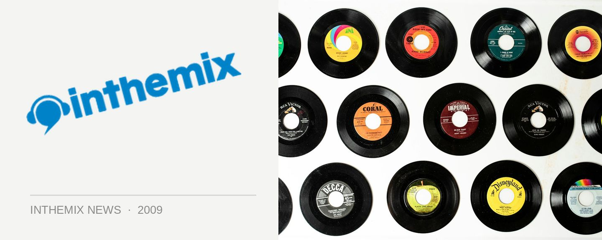

Red Bull Academy back for 2010
The Red Bull Music Academy will be back again for 2010, and this time will take place in the cultural centre that is London. A complex full of studios and instruments will again be built as a space for creative minds to come together, with a select number of promising musicians chosen from around the world to fly over and take part in a meeting of the musical minds. Both veterans and brand new talents will perform every night at showcases across the city.
Applications are open until the 27th July for all the producers, instrumentalists, vocalists and DJs who want to be in with a chance to be one of the special few to get flown to London for a term at the Red Bull Academy. To give punters a taste of what the Academy is like, there will be info sessions held in Sydney, Melbourne, Brisbane, Adelaide and Perth during June, so check out the details below…
Melbourne Info Session:
ARTIST: Blu & Exile
HOST:Kano Hollamby
WHEN: Fri 5th June, 6-9PM
WHERE: 393 Brunswick Street, Fitzroy
CONTACT: kano@redbullmusicacademy.com
Adelaide Info Session:
ARTIST: Blu & Exile
HOST: Troy Sincock
WHEN: Sat 6th June, 5-9pm
WHERE: Rocket Bar
CONTACT: troy@redbullmusicacademy.com
Brisbane Info Session:
ARTIST: Blu & Exile
HOST: Derryn Knuckey
WHEN: Thu 11 Jun, 7-9pm
WHERE: Judith Wright Centre of Contemporary Arts
CONTACT: derryn@redbullmusicacademy.com
Sydney Info Session
ARTIST: Kode 9
HOST:Lorna Clarkson
WHEN: Fri 26 Jun, 6:30pm
WHERE: Hermanns
CONTACT: lorna@redbullmusicacademy.com
Perth Info Session
ARTIST: Kode 9
HOST:Ben Taaffe
WHEN: Sat 27 Jun, 6:30pm
WHERE: Flying Scotsman (upstairs)
CONTACT: ben@redbullmusicacademy.co